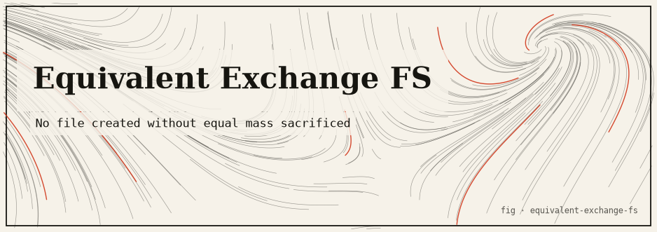

equivalent-exchange-fs
A filesystem enforcing the Law of Equivalent Exchange: to obtain, something of equal value must be lost. Write N bytes → delete N bytes. Conservation invariant verified by tests. Rust.

The idea
In Fullmetal Alchemist, the Law of Equivalent Exchange governs alchemy: to obtain something, something of equal value must be sacrificed. This package applies that law to a virtual filesystem: the total number of bytes stored is invariant. To write N bytes of new data, you must simultaneously delete N bytes of existing data.
The filesystem is fully in-memory; no real disk I/O occurs. The conservation invariant is checked after every mutation and enforced by the type system where possible. Tests verify that no sequence of operations can change the total byte count.
The mathematics
State: S = (files, total_bytes)
Invariant: total_bytes = Σ |content(f)| for all f ∈ files
total_bytes is constant (never changes after initialisation)
Operations:
write(path, data): must specify sacrifice(path', n) where n = |data|
→ adds |data| bytes, removes n bytes from sacrifice target
→ total_bytes unchanged
read(path): no cost
delete(path): returns bytes to a "void pool" — not writeable
void_exchange(n): writes n bytes from void pool (sacrifices void capacity)
Run it
git clone https://github.com/caelum0x/awesome-mad-projects.git
cd equivalent-exchange-fs
cargo test
cargo run
# FS capacity: 1024 bytes
# write("a.txt", 200 bytes, sacrifice="b.txt") → OK
# total_bytes: 1024 ✓ (invariant holds)
# write("c.txt", 300 bytes) → ERROR: no sacrifice specified